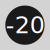
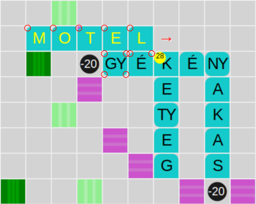

Betűtéboly játékszabály
A Betűtéboly egy szókirakó játék, amelynek során minden fordulóban nyolc véletlenszerűen kisorsolt betűből kell a lehető legértékesebb szót kiraknunk a táblára. Cél, hogy a játék végére több pontot gyűjtsünk, mint a számítógép.
Bemutatóvideó: 
Kezelés
Két lehetőség áll rendelkezésre a betűk táblára való helyezésére. A tartóról az egér bal oldali gombjának lenyomva tartása mellett húzhatjuk őket a tábla kívánt mezőjére, vagy kattinthatunk a táblának arra a mezőjére, ahová a lerakni kívánt szó első betűjét szánjuk, ekkor abban megjelenik egy nyíl, ami a lerakás irányát jelzi - ha újra rákattintunk, akkor az irány vízszintesről függőlegesre változik, és viszont -, majd a tartón levő betűkre kattintunk, abban a sorrendben, ahogyan a szóban követik egymást. Érintőkijelzős eszközökön csak a második lehetőség adott. Az első betű négyzetébe koppintunk, majd sorban a tartón levő betűkre, ahogyan a szóban követik egymást.
A játék menete
A játék indításakor magyar és angol nyelv közül választhatunk. Magyar nyelven a számítógép számára csak az elfogadott szavak egy kisebb része (szűk szókészlet beállításánál kb. 18000 szó, normál beállításnál kb. 55000 szó) áll rendelkezésre a szóalkotáshoz. Angol nyelv beállításakor nincs különbség, a számítógép a teljes szókészletet használja. A szótár szándékosan nem tartalmazza a durva szavakat. A szókészleten kívül (azzal egyidejűleg) a gépi ellenfél a felhasznált új betűk számának korlátázásával, illetve egy az erősséget százalékban megadó beállítással is gyengíthető. A játékos gondolkodási ideje 60-180 másodperc között változtatható. Minden forduló után a pillanatnyi állás automatikus mentése megtörténik a saját számítógépünkre. Ha a játék indításakor a program mentett játékot (félbeszakadt játékot) észlel, akkor annak folytatását felajánlja.
Az Új játék gombra kattintással kezdeményezhetünk újabb játékot. Ha megkezdett játék során tesszük ezt, figyelmeztető üzenetet kapunk arról, hogy ha továbblépünk, akkor a korábbi játékot már nem tudjuk folytatni. A Mégse gomb használatával visszatérhetünk folyamatban levő játékunk folytatásához. Ha nem a korábbi beállításokkal és/vagy nyelven szeretnénk játszani, akkor az oldal újratöltésével juthatunk vissza a beállítások megváltoztatását lehetővé tevő képernyőre.
Az első kirakott szónak fel kell használnia a tábla közepén lévő mezőt.
Az új szónak mindig csatlakoznia kell a már táblán lévőkhöz.
A számítógép és a játékos ugyanazokból a betűkből, egyidejűleg alkot szót.
Mindig a játékos szava marad a táblán, akkor is, ha a számítógépé magasabb pontszámot ér.
Amíg van elég betű hátra még a készletből, addig minden fordulóban 8 betű áll a rendelkezésünkre, melyből a megadott gondolkodási idő alatt kell legalább egyet elhelyeznünk a táblán. A hátralevő idő pillanatnyi állását mind számjegyekkel, mind grafikusan, egy folyamatjelző sáv segítségével kijelzi a program.
Ha a fordulóban nem kerül új betű a táblára, azt tétlenségként értékeli a játék. Ilyenkor a tartón lévő betűk helyett újakat sorsol a program. Az aktuális forduló számát, és a tétlen körök számát egy közös kijelzőben "/" jellel elválasztva láthatjuk. Ha a tétlen körök száma eléri a hármat, a játék véget ér.
A Keresés gomb használatával győződhetünk meg arról, hogy a szótárban megtalálható-e a szó, amit ki szeretnénk rakni. Vörös szín jelzi, ha a szó nem érvényes, a szöveg zöldre vált, ha érvényes.
A Szünet gomb használatával a játék megállítható, majd folytatható. A szünet ideje alatt a tábla pillanatnyi állása és a tartón levő betűk nem láthatóak.
A kihúzott betűk között vannak "*" (dzsóker) karakterek, melyek a táblára kerülésükkor, egy az ábécé betűit felsoroló felugróból való választással, a kívánt betűre cserélhetőek. A dzsókerek annak a betűnek az értékét is felveszik, amelyre cseréltük őket.
A táblára került, de még nem véglegesített betűk a Vissza gombbal helyezhetők vissza a tartóra. A tartón levő betűk sorrendje a Keverés gombbal változtatható meg.
Minden egyes betű táblára kerülésekor a program ellenőrzi, hogy a táblán lévő betűk a szótárban megtalálható, érvényes szavakat alkotnak-e. Ha igen, akkor a frissen táblára került betűk színe sárgára változik. Ha a pillanatnyilag táblán lévő új betűk érvényes szavakat alkotnak, akkor egy kis sárga körben megjelenő számérték jelzi az elérhető pontszámot.
A táblára rakott betűk véglegesítése a Kész gombbal történik, ekkor az összes újonnan keletkezett szó érvényességének ellenőrzése megtörténik a beépített szótár alapján. Ha valamelyik szó nem szerepel a szótárban, akkor egy felugró üzenet figyelmeztet erre. A Rendben gomb megnyomása után újra próbálkozhatunk a szóalkotással.
A játék végén a Részletek gombra kattintva megnézhetjük az egyes fordulók szavait.
Készlet és pontozás
A magyar és angol betűkészlet egyaránt 147 betűt (ebből 10 dzsóker) tartalmaz, melyek 1-4 pontot érnek. Az egyes betűk annyi pontot érnek, ahány sarkuk le van kerekítve.
Ha 4 vagy annál több új betű kerül egyszerre a táblára, akkor a következő jutalompontszámok járnak:
- 4 betű - 5 pont
- 5 betű - 10 pont
- 6 betű - 20 pont
- 7 betű - 40 pont
- 8 betű - 80 pont
A tábla
A tábla a lerakott betűk és a kirakott szavak értékét többszöröző mezőket is tartalmaz. Egyes mezők felhasználása adott pontértékű jutalmat vagy levonást eredményez.
- - a betű értékét kétszerező mező
- - a betű értékét háromszorozó mező
- - a szó értékét kétszerező mező
- - a szó értékét háromszorozó mező
- - 20 pontos jutalom
-  - 20 pontos levonás
Példa pontszámításra
A képen látható játékrészlet alapján állapítsuk meg hány pontot eredményezne, ha a MOTEL szót véglegesítenénk. Az egyes betűk értékét a lekerekített sarkaik száma adja. Ez alapján a MOTEL szó 5 pontot ér. Mivel a T betű a szó értékét kétszerező mezőre esik ez 2*5=10 pont. Ehhez jön még az 5 új betű kirakásáért járó 10 pont. Keresztirányban is keletkezett két új szó, ezeket is pontozni kell, és hozzáadni az eddigi 20 ponthoz. Az EGY szó 5, a LÉ pedig 3 pontot ér, így jön ki a sárga körben jelzett 28 pont. ( (1+1+1+1+1)*2+10+5+3=28 )